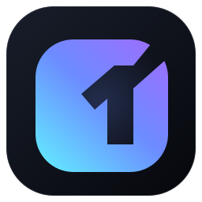

语义完整，但标准 U、轨道和中心圆点较常见，纯图形商标的近似检索压力较大。
边界仍然存在，但数字 1 形成的负空间穿过边界。它表达 Unzoo One 的核心承诺：能力被释放，意图仍然唯一，控制权始终属于用户。

开放出口 负空间数字 1第一版继承了旧 Browser 的 U 与中心眼，因此容易落入通用科技 Logo。B 版改成单一开放边界，并让 1 本身切开边界。
语义完整，但标准 U、轨道和中心圆点较常见，纯图形商标的近似检索压力较大。
封闭轮廓被 1 形路径切开。取消具象眼睛和目标圆，轮廓更紧凑，产品名与图形形成直接关系。
商标稿不依赖渐变、光晕和深色底板。右侧为原始 SVG 的直接缩放，16px 仍需在定稿阶段制作光学校正版。
标志只在入口和智能活动位置出现。主界面仍以任务、证据和审批为中心。
整理今天的研究并生成产品决策摘要
负空间必须第一眼能被部分用户识别为 1，但不能变成普通数字图标。
开放边界保留了“解除围栏”的含义，但不再直接依赖旧版 U 和眼睛。
单一几何轮廓、低颜色占比和清晰留白应比多层发光更耐用。